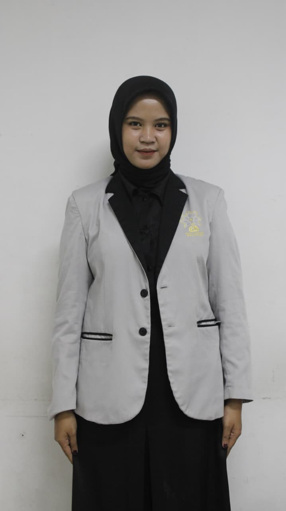

TENTANG SAYA
Saya, Falih
ファリハウリア
Mahasiswa Tadris Ilmu Pengetahuan Alam yang memiliki ketertarikan besar pada pendidikan sains, penelitian pembelajaran IPA, pengembangan media pembelajaran inovatif berbasis STEM, serta aktif dalam berbagai organisasi mahasiswa.
Visi
Menjadi pendidik, akademisi, dan agen perubahan yang kompeten, inovatif, serta mampu berkontribusi dalam pengembangan pendidikan sains di Indonesia.
Misi
- Mengembangkan kompetensi akademik dan profesional di bidang pendidikan IPA.
- Menghasilkan media dan perangkat pembelajaran inovatif.
- Berkontribusi melalui organisasi dan pengabdian masyarakat.
- Menjadi pribadi yang terus berkembang dalam kepemimpinan dan intelektualitas.
Motto
一期一会
"Belajar, bertumbuh, dan memberi manfaat melalui ilmu pengetahuan serta pengabdian."
Data Pribadi
NamaFalih Aulia Rahma
PanggilanFalih
UniversitasUIN Salatiga
FakultasFTIK
Program StudiS1 Tadris Ilmu Pengetahuan Alam
Tahun Masuk2023